Práctica 0 - Entropía
Fecha: 2026-04-23 23:23
1. Introducción
En esta práctica se analiza la entropía de un conjunto de imágenes con el objetivo de medir su nivel de información y complejidad. Se comparan diferentes clases para observar cómo varía este valor.
2. Entropía en imágenes
La entropía es una medida que indica la cantidad de información o desorden en una imagen.
- Escala de grises: se calcula a partir de la distribución de intensidades de los píxeles.
- Color: se calcula en los canales RGB y luego se obtiene un promedio.
3. Diagramas de cajas
Los diagramas muestran la distribución de la entropía por clase.
Eje X: clases | Eje Y: entropía
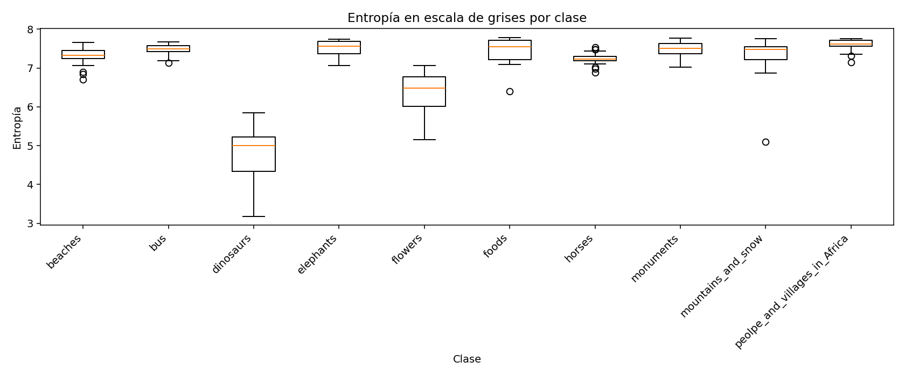
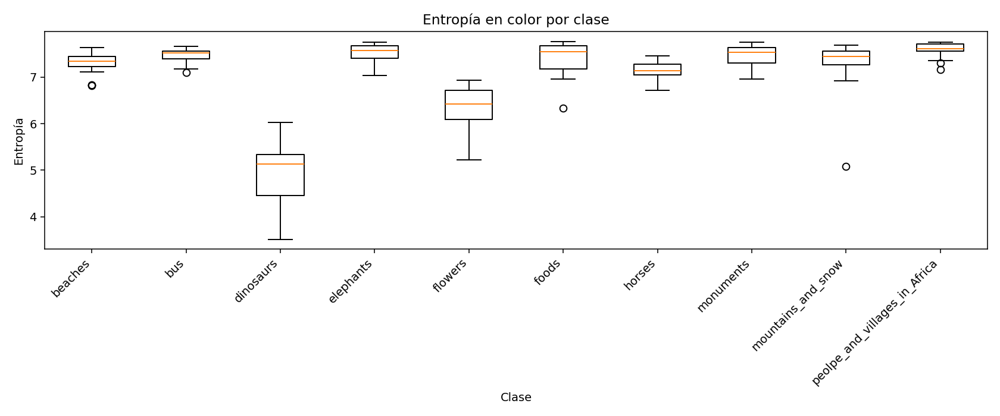
Clase con mayor entropía: peolpe_and_villages_in_Africa
4. Análisis
Las clases con mayor entropía presentan mayor variación de colores, texturas y objetos, lo que incrementa la cantidad de información. Las clases con menor entropía tienden a ser más uniformes.
5. Modificaciones
Se aplicaron modificaciones pequeñas, medianas y grandes para analizar cómo cambia la entropía.
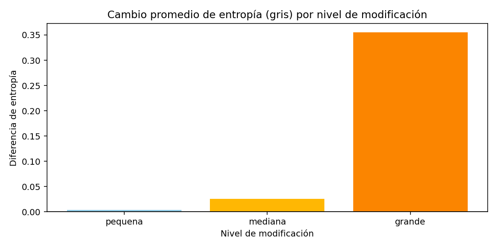

Se observa que al modificar la imagen, la entropía cambia debido a la alteración de la información visual.
6. Resultados
Se muestra una imagen representativa por cada clase junto con su histograma y valores de entropía.
| Clase | Ruta | Entropía gris | Entropía color | Histograma |
|---|---|---|---|---|
| beaches | images_extracted/training_set/beaches/115.jpg | 7.6637 | 7.6325 | 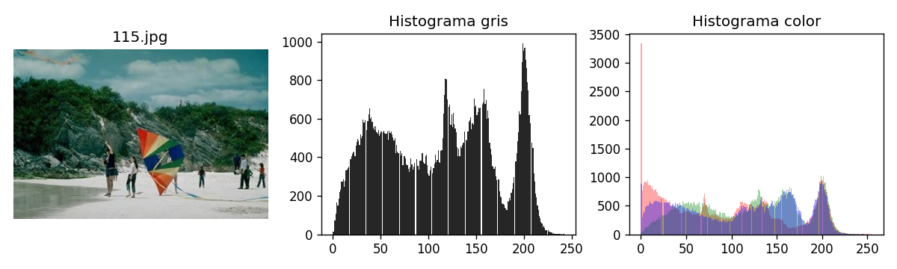 |
| bus | images_extracted/training_set/bus/325.jpg | 7.6357 | 7.6662 | 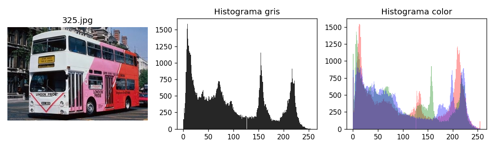 |
| dinosaurs | images_extracted/training_set/dinosaurs/422.jpg | 5.8416 | 6.0242 | 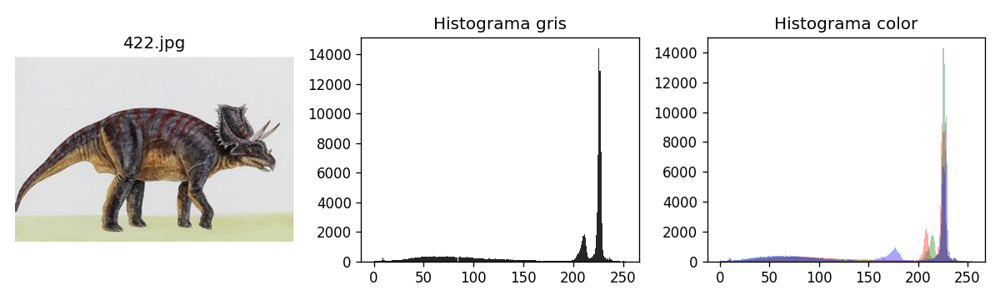 |
| elephants | images_extracted/training_set/elephants/528.jpg | 7.7478 | 7.7525 | 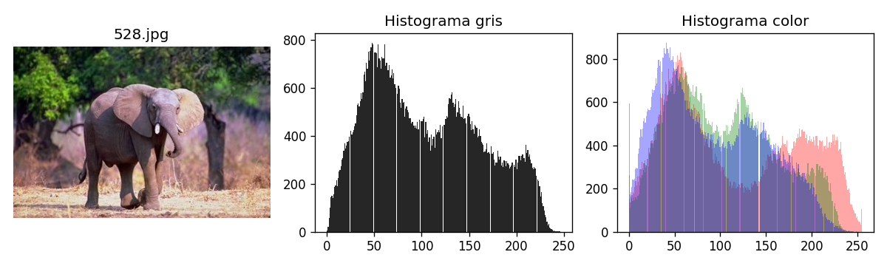 |
| flowers | images_extracted/training_set/flowers/624.jpg | 6.7524 | 6.9374 | 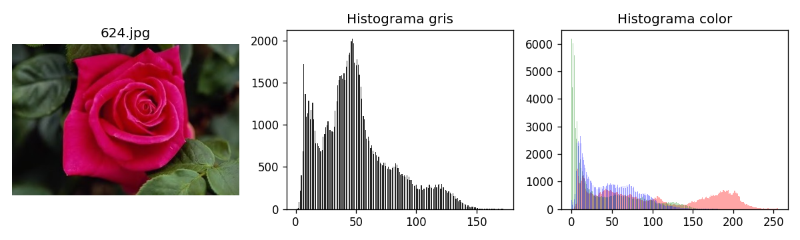 |
| foods | images_extracted/training_set/foods/919.jpg | 7.7884 | 7.7714 | 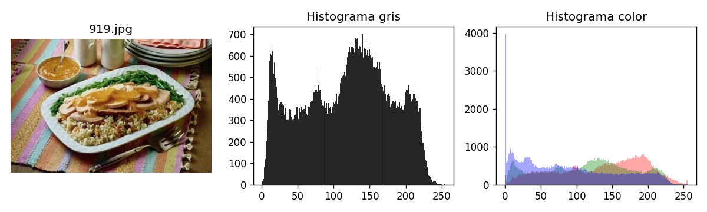 |
| horses | images_extracted/training_set/horses/712.jpg | 7.4735 | 7.4661 | 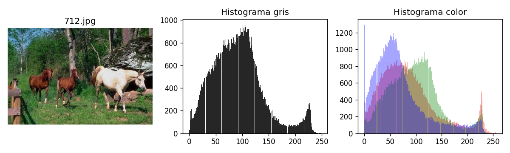 |
| monuments | images_extracted/training_set/monuments/221.jpg | 7.7633 | 7.7474 | 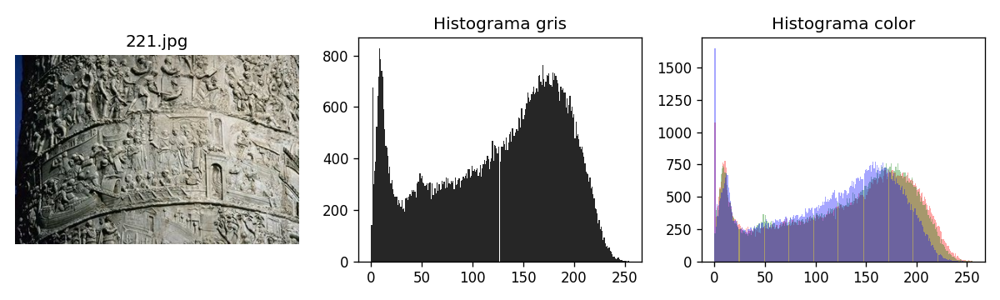 |
| mountains_and_snow | images_extracted/training_set/mountains_and_snow/824.jpg | 7.7570 | 7.6860 | 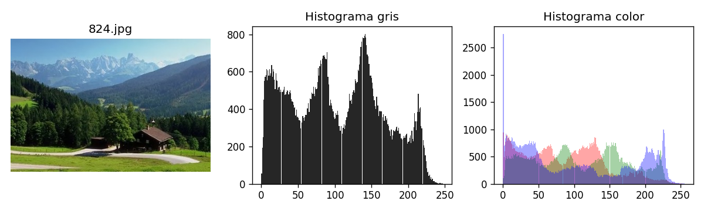 |
| peolpe_and_villages_in_Africa | images_extracted/training_set/peolpe_and_villages_in_Africa/22.jpg | 7.7471 | 7.7588 | 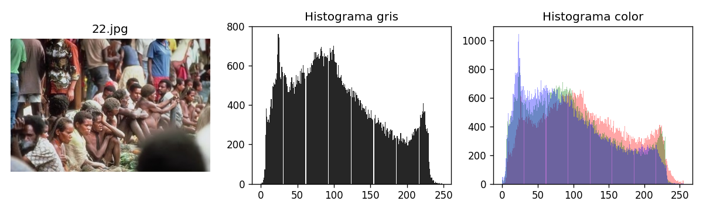 |
7. Conclusión
La entropía es una herramienta útil para medir la complejidad de una imagen. Permite diferenciar entre imágenes simples y complejas, así como analizar el efecto de modificaciones sobre la información visual.